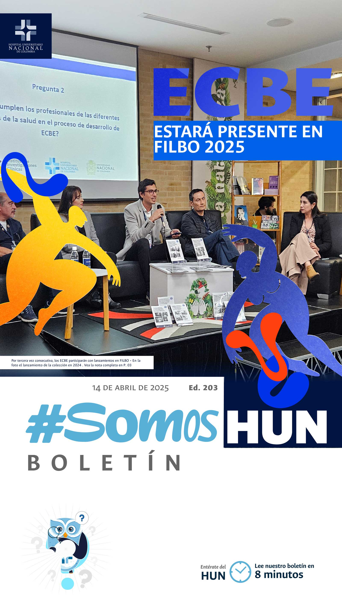
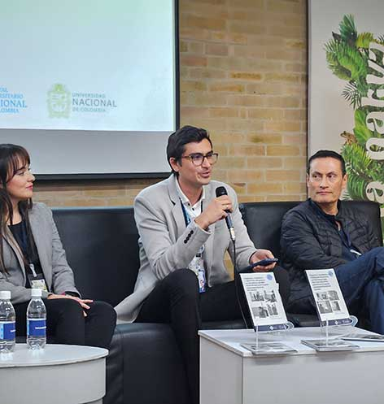
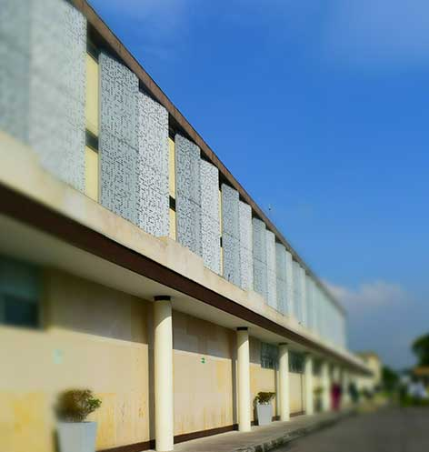
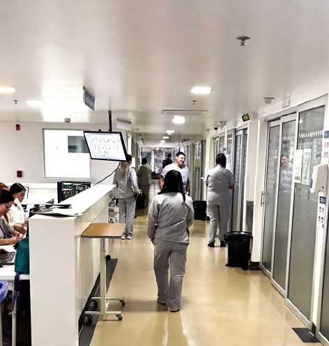
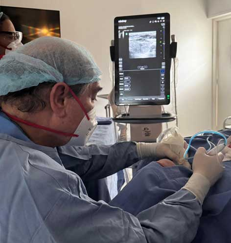
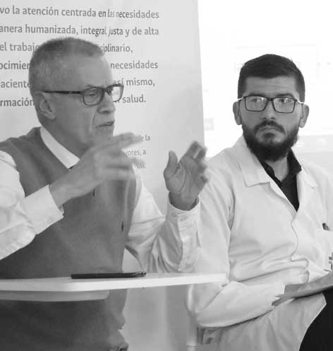
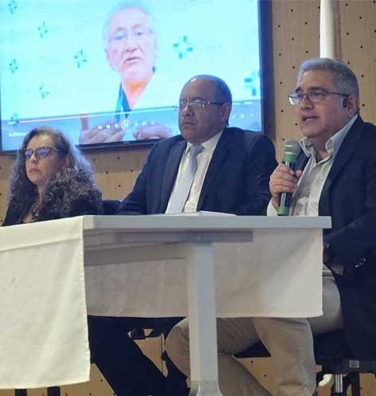
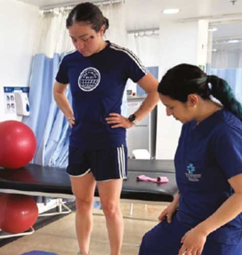

Ver todos los boletines
ECBES ESTARÁN PRESENTES POR TERCERA VEZ EN LA FILBO
Desde 2023 los Estándares Clínicos Basados en la Evidencia han ocupado los principales espacios de divulgación científica para la comunidad especializada y la población en general. De la mano de la Facultad de Medicina se han llevado a cabo lanzamientos en el marco de la Feria mas importante para el sector editorial en Colombia.Leer más

POA SE CONFIGURA PARA 2025
La formulación e implementación de los Planes Operativos Anuales (POA) en el HUN es crucial para asegurar la eficiencia, calidad y coherencia en la prestación de servicios de salud bajo nuestro modelo de prestación PRECISO. Un POA es una herramienta de planificación estratégica que define las metas, actividades, recursos y responsabilidades que deben cumplirse dentro de un año para alcanzar los objetivos institucionales, el de 2025 ya fue consolidado.Leer más

ACTUALIZACIÓN DE CLIMA ORGANIZACIONAL
Actualizamos nuestro enfoque sobre Clima, Cultura y Liderazgo Organizacional para fortalecer el compromiso, bienestar y desarrollo de todos los colaboradores del HUN. Te compartimos los puntos claveLeer más

RADIOFRECUENCIA PERCUTANEA EN CIRUGÍA DE CABEZA Y CUELLO
Avanzamos en el servicio de Cirugía de Cabeza y Cuello, llevando a cabo Ablación por Radiofrecuencia, para tratamiento de nódulos tiroideos benignos, un procedimiento efectivo, sin anestesia general, ambulatoria, casi indoloro y sin cicatriz en cuello, siempre pensando en ofrecer el mejor tratamiento para los pacientes que acuden con nosotros. La ablación por radiofrecuencia de tiroides es un procedimiento que usa ultrasonido, localizando el nódulo y aplicando energía controlada a través de un electrodo para eliminarlo.Felicitaciones al equipo que hace esto posible para ofrecer una atención centrada en el paciente.
Leer más

LANZAMIENTO DEL ECBE
Diagnóstico y tratamiento del paciente con trastorno neurocognitivo mayor debido a enfermedad de Alzheimer en el HUN
La generación de recomendaciones para la atención integral de pacientes debe estar basada en la mejor evidencia disponible, la experiencia clínica y el contexto particular donde estas son aplicadas. El proceso de generación de Estándares Clínicos Basados en la Evidencia (ECBE), busca cumplir los objetivos misionales del Hospital Universitario Nacional de Colombia (HUN), generando recomendaciones para el abordaje integral de pacientes con enfermedades o eventos de interés en salud.
Leer más

EGRESADOS UNAL Y EL HUN
lanzan convenio para
servicios de salud
Con un portafolio de servicios con acceso exclusivo en servicios de salud para la comunidad de egresados de la UNAL, se lanzó el convenio interinstitucional que beneficiará a esta importante comunidad de la Universidad Nacional de Colombia (UNAL)Leer más

ARRANCÓ EL CLUB DEPORTIVO LOS BÚHOS
Un grupo de 46 deportistas del HUN y 20 del equipo de Embajadores UNAL, han iniciado el proceso de valoraciones realizadas por Medicina del Deporte y Fisioterapia.Leer más